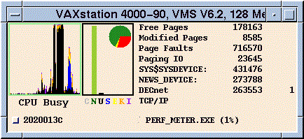
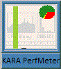
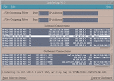
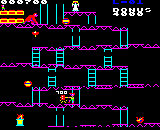

Rare finds for the VAX and Alpha: a collection of Motif, X11 and command line programs that I wrote for, or ported to, VMS between 1996 and 2002, nearly all with full source code, plus a WHOIS client that works the same on VMS and Windows.
OpenVMS VAX Alpha Motif Source code Free
Software for VMS is hard to come by these days, so dust off that VAXstation, fire up the Alpha, or boot an
emulator, and help yourself. The word porting doesn’t necessarily imply that I did much work! If the
code was written in ANSI C, it often just meant writing a DESCRIP.MMS for MMS or for
MMK, the free make utility
for VMS, and a SETUP.COM to create the foreign command symbol. Most of these programs should also
build on Unix.
These pages used to live on my old WordPress site, and before that on my own web pages, where they started in 1996. If you would like some background on VMS itself, see Kara’s OpenVMS Page, and if you are new to VMS, try Kara’s VMS Tutorial.
About the downloads. Each zip file is exactly as I released it, and each has a detached,
ASCII-armoured PGP signature (.asc), so you can be sure it hasn’t been altered since I put it
here. My public key is in the PGP Key and Contact Information section
of my KLO Software page. You don’t actually need PGP to use any of the software (except PGP from TPU, of
course): the signatures are just a way of guaranteeing that the files haven’t been tampered with. The original
.SIG files from the 1990s were made with PGP keys I no longer use, so these new signatures replace
them.
Though this software is all free to download and use, it isn’t necessarily public domain, and should not be distributed elsewhere, and certainly not modified or sold, without the permission of the author. The programs I ported are by the authors named below, and their own terms, in the files that come with each one, apply to their code.
Last updated 21 March 2000
Motif VAX Alpha Source code

Originally written for the old VWS window system by Robert Heller, this program was enhanced, converted to Motif and made to work on Alphas by myself, Mark Pizzolato, Joe Kazimierczyk and Dean Schamberger, giving the 2.3 VMS Performance Meter. I modified the 2.4 version to optionally use a “dynamic” icon display. When the Performance Meter is iconized, the state bar graph, with different coloured bars for User, Supervisor, Executive, Kernel and Interrupt time, is shown in the icon window. When the application is “out on the desktop”, the CPU state, a history graph, and various disk and memory statistics are shown as well as the state graph. Some memory leaks in the old code were found and fixed along the way. Clicking the “top CPU” process toggle button brings up an additional window with more information about that process.

Another new feature is the “tomato of memory”, which appears in the graph window and the icon window. It is a pie chart of free and modified pages against total memory.
The window titles have changed slightly, so that the system version and memory are shown in the main window’s
title bar, and the machine name has moved to the start of the icon title, to make life easier if you
SET DISPLAY/NODE=node to one machine from several different nodes. Using the remote
display feature of X Windows, I once monitored 27 different machines at the same time from one workstation.
Thanks to Chris Sharman, version 2.5 has corrected CPU percentage calculations, which should ensure that you never see anything using more than 100 percent of the CPU.
Full source code is provided. Build it with MAKE_PERF_METER.COM. It runs on VAX VMS V5.5 to
V7.3 and Alpha VMS V6.1 to V7.3 (it hasn’t been tested on Alpha VMS V1.5, but should work), and is compatible
with Motif 1.1 to Motif 1.2-4. PFM$STARTUP.COM shows how to define the logical names it needs.
Edit the command file PERF_METER.COM, and add @disk:[dir]PERF_METER.COM
to your Applications menu to run the Performance Meter.
Last updated 10 August 2002
Motif VAX Alpha Source code

This is a Motif/X Window application for OpenVMS VAX and Alpha machines, which displays and saves the logging
information broadcast by LinkSys gateway firewall routers such as the BEFSR41. It shows the inbound and
outbound connections being made, or refused, through the firewall, and lets you search the text and copy it to
the clipboard. The window is split into two panes, one for inbound and one for outbound connections. The lists
can optionally be filtered by port number and IP address, though everything is still captured in the log file.
The LINKSYSLOG.HLP file describes the various options, such as beeping on incoming connections,
and changing the log file name.
Last updated 31 March 2002
VAX Alpha Windows Command line Source code
There are two versions of WHOIS here: a command line version, with source code and make files for both OpenVMS (VAX and Alpha) and Windows, and a Windows MFC version, binaries only, for Intel and Alpha.
The first is a command line WHOIS client, as described in RFC 954, which I wrote to work on VMS and Windows NT
to XP. It sends a query about an internet domain to a suitable server. It recognises .com,
.mil, .uk and various other domains, and tries to pick a sensible server, and if the
first server refers it elsewhere, it repeats the lookup there. If you know the server you want, you can force
it with a command line switch. Here are some examples, from 2002:
$ WHOIS Usage: whois [ -h nic_server ] name_to_find [ > output_file ] For a list of whois servers try: whois -h whois.indiana.edu whois-servers $ WHOIS jafsoft.co.uk Using WHOIS server whois.nic.uk, port 43, to find jafsoft.co.uk Domain Name: jafsoft.co.uk Registrant: Jafsoft Ltd . .
The WHOIS protocol itself hasn’t changed much (RFC 954 has since been replaced by
RFC 3912), but many of the
servers have, so the built-in list of servers is now out of date, and the Indiana server in the usage message is
long gone. The -h switch lets you name a current server.
It builds on VAX or Alpha VMS 6.2 to 7.3 with UCX 4.2 or TCP/IP Services 5.1, and on Windows NT 4.0, 2000 or
XP. On VMS, build it with MMS or MMK, or @MAKE if you don’t have either, then set up the foreign
command symbol with @SETUP. On Windows, set up the Visual C++ command line environment (in those
days by running VCVARS32.BAT; today, open a Developer Command Prompt), then
C:\> NMAKE whois.mak
and copy the executable to a folder on your PATH. The command is used in exactly the same way on
Windows and VMS.
The second is a Windows Visual C++ WHOIS client, also written by me. Unzip it into a folder of your choice and
add a shortcut to Whois.exe. It needs the MFC 4.2 run-time library, MFC42.DLL, which
is still included with Windows. There is also an InstallShield version of the Intel client, which unpacks and
sets everything up for you. These are 1998 binaries, built for Windows 95, 98 and NT, so I can’t promise how
they behave on a modern version of Windows.
Last updated 31 March 2001
CGI VAX Alpha Source code
This is a VMS port of Muhammad A. Muquit’s popular
Web Count
2.4 program, which displays a web page’s hit count in a number of styles, including the “car odometer”. It can
show the time and date too. It was tested on VAX and Alpha VMS 6.2, with the DECthreads OSU HTTP Server
versions 1.9 to 3.9, and with Purveyor. You will need DEC C to build it, not VAX C. GNU C should work if you
build the counter with Robert Byer’s GCC_MAKE_COUNT.COM, then use INSTALL.COM (which
normally builds and installs) just to install it. INSTALL.COM handles MMS better than it
used to, though some people have reported that MMS can fall over.
Version 2.4P adds support for Process Software’s Purveyor web server, and full VMS lock manager locking of the counter data files, which were provided by Neil Rieck. The hit counter on the original version of this page was produced by Web Count 2.4P.
There are some restrictions in the VMS version. For example, an explicit df=datafile isn’t
allowed. Instead, the referring URL is turned into a VMS file name, by a routine kindly written by my colleague
Gonzalo San Martin, and that file stores the hits for the page. The July 1997 maintenance release put a
“no-cache” fix into COUNT.COM, thanks to Philip Taylor of Royal Holloway and Bedford New College.
The README.VMS file in the distribution explains how to build and install the counter.
Last updated 5 March 1997
X11 VAX Alpha BBC Micro Source code

This is a VMS port of James
Fidell’s XBeeb, which emulates a BBC Model B microcomputer. A BBC Micro on a VAX: yes, really. It runs on
VMS 6.2 onwards, VAX and Alpha, and compiles with DEC C 5.3 onwards. Make sure you read the
README.VMS file, which explains how to build the program, how to install the Teletext fonts on
your workstation, and how to turn off automatic KeyRelease events on VAXstations. A “must have” for BBC Micro
nostalgia sufferers.
For copyright reasons, I can’t make the BBC operating system ROM available here, but if you get in touch, I will help you take a copy from an old Beeb that you might have access to.
Last updated 28 April 1997
VAX Alpha MACRO-32 Source code
This is VMS guru Neill Clift’s utility to display information about a mailbox and the messages in it. It
accepts wildcards, and the /GROUP qualifier makes it easy to limit the view to the mailboxes in a
particular UIC group. This version works on VMS 5.5 to 7.3, VAX and Alpha.
Last updated 3 April 1997
TPU DCL VMS MAIL PGP
This is a TPU procedure and a command procedure that I wrote to integrate PGP into VMS MAIL, or any application that lets you use the TPU editor. Press Ctrl+P to encrypt, decrypt or sign the text you are editing. It works with both the terminal version of the EVE editor and the DECwindows Motif interface. The PGP_FROM_TPU.TXT file contains a command procedure to set up the PGP command and its logical names, plus the TPU procedure and installation instructions.
It was written for PGP 2.6.3i, which was the international version of PGP at the time, and it uses PGP 2.6’s command line options, so it would need changes to work with a modern OpenPGP program such as GnuPG. Bear in mind too that it passes your pass phrase to PGP on the command line of a subprocess. The procedure was also available from Ståle Schumacher’s International PGP Home Page, which has since disappeared.
Last updated 26 February 1997
VAX Alpha Steganography Source code
This is a VMS port of Henry Hastur’s MANDELSTEG and GIFEXTRACT programs, which use GIF files of parts of the Mandelbrot set to hide or extract data. It is used like this:
$ mandelsteg -e mandel.gif < somefile
This hides the contents of somefile in a 640×480 pixel image in MANDEL.GIF. It works with
text files or binaries (but see the caveat below), though it is really “intended” to hide PGP encrypted files,
preferably ones that have had their headers stripped with the Stealth program, which I haven’t ported yet.
To extract the hidden file:
$ gifextract mandel.gif > output_file
The output from GIFEXTRACT seems to get padded with blank characters (or random characters, if you use the
-r option when encoding), and this can give error messages about over-long records when you edit
the output file. If, as intended, you hide a PGP output file in the GIF, then it doesn’t really matter, because
PGP still interprets its input correctly. Please let me know if you find
a workaround that doesn’t stop the utilities working on files produced on other platforms.
One of the pictures on this page has a message hidden in it. No prizes for guessing which one, but do drop me a line if you decode it.
Last updated 8 May 1997
VAX Alpha GIF Source code
TGD, written by Bradley K. Sherman, reads text files of commands and writes out GIF files. You can use it with plain text files, or with Perl or another scripting language if you want to do clever stuff. This makes it ideal for creating dynamic GIFs for web servers such as the OSU DECthreads HTTP Server. The distribution also contains the source of Tom Boutell’s GD library, which TGD needs. GD is still going strong, as libgd.
The May 1997 update added a TGD.HLP help file, kindly provided by Martin P. J. Zinser,
and a README.VMS file, which I was too lazy to write when I first released the code.
Last updated 17 January 1997
Motif Athena VAX Alpha Source code
This is a VMS port of Gary Aviv’s LiteClue widget, which gives X Window programs “help bubbles”. It works with Motif and Athena widgets, popping up a little box of help text if the mouse pointer lingers over a widget for more than a set time. Gary wrote it at Computer Generation Incorporated (CGI), whose FTP server was its original home.
The distribution contains the manual in PostScript, HTML and plain text. It’s very easy to add a LiteClue to a widget, and example programs for both Motif and Athena are included.
Last updated 27 February 1997
VAX Alpha Animated GIF Source code
This is my port, to VMS on the VAX and Alpha, of Rene Mueller’s excellent GIF animation tool, GIFMerge. Build
it with MMK, and use @SETUP.COM to set up a foreign command symbol pointing to the right
executable. Wildcard expansion and the Unix > redirection are all done in the program, so you
can use it just like the Unix version; gifmerge -h tells you how. The -pos arguments,
for small, incremental GIF merges, now work correctly.
Example: $ @some$disk:[PDS.GIFMERGE]GIFMERGE ! Set up the command $ gifmerge -25 -l0 step%.gif > animated.gif ^ ^ ^ ^ | | | | Centisec delay | | Output file spec | | 0 = Loop forever | | Wildcard input spec
Last updated 23 December 1998
VAX Alpha Steganography Source code
These are VMS ports, for the VAX and Alpha, of Matthew Kwan’s GIFShuffle and SNOW, which are both steganography tools, just for a bit of fun. SNOW conceals messages in the whitespace of an ASCII text file, optionally encrypting them too with the ICE algorithm. GIFShuffle uses cunning colour map ordering to conceal information, and also provides compression and encryption. All of Matthew’s code is copyright free, but I’m sure he’d like an acknowledgement if you use it in your own programs.
The sources unpack into [.GIFSHUF] and [.SNOW]. Go into each directory and build the
program with MMK or MMS, then use @SETUP.COM to create a foreign command symbol pointing to the
right executable. Here are some examples of how to use the programs:
$ gifshuf -h ! Get help on GIFShuf $ gifshuf -m "Hello World" in.gif out.gif ! Hide a message in a GIF $ gifshuf gifshuf.gif ! Extract the message from a GIF $ snow -h ! Get help on SNOW $ snow "-C" message.txt ! Decode the message hidden in a text file
For anyone without a compiler to hand, here are precompiled binaries for some of the programs. The Performance
Meter V2.4 binaries come with the UID file the Motif interface needs; the V2.5 Alpha kit is object files only,
to link with MAKE_PERF_METER.COM from the V2.5 source code.
| Program | Platform | Download |
|---|---|---|
| Performance Meter V2.5 | Alpha VMS 7.1 (object files) | PERF_METER-2-5_BINARIES_ALPHA_7-1.ZIP (23 KB), signature |
| Performance Meter V2.4 | VAX VMS 5.5-2 | PERF_METER_BINARIES_VAX_5-2.ZIP (25 KB), signature |
| Performance Meter V2.4 | VAX VMS 6.2 | PERF_METER_BINARIES_VAX_6-2.ZIP (25 KB), signature |
| Performance Meter V2.4 | VAX VMS 7.1 | PERF_METER_BINARIES_VAX_7-1.ZIP (25 KB), signature |
| Performance Meter V2.4 | Alpha VMS 6.2 | PERF_METER_BINARIES_ALPHA_6-2.ZIP (38 KB), signature |
| Performance Meter V2.4 | Alpha VMS 7.1 | PERF_METER_BINARIES_ALPHA_7-1.ZIP (38 KB), signature |
| GIFMerge | VAX VMS 5.5-2 | GIFMERGE_BINARIES_VAX_5-2.ZIP (12 KB), signature |
| GIFMerge | Alpha VMS 6.2 | GIFMERGE_BINARIES_ALPHA_6-2.ZIP (21 KB), signature |
| TGD 1.2c and GD 1.2 | Alpha VMS 6.2 | TGD1_2C_BINARIES_ALPHA_6-2.ZIP (238 KB), signature |
The LinkSys logger and command line WHOIS zips above already include VAX and Alpha executables.
For the completists, and for anyone whose old VMS system matches an earlier release, here are the previous versions that were on the original page, and one curiosity.
| Program | Released | Download |
|---|---|---|
| VMS Performance Meter V2.4 source code | March 1998 | PERF_METER-2-4.ZIP (47 KB), signature |
| Web Count 2.4 source code, before the Purveyor and locking changes | December 1997 | WWWCOUNT2_4.ZIP (534 KB), signature |
| Web Count 2.3 source code | July 1997 | WWWCOUNT2_3.ZIP (303 KB), signature |
TGD 1.2b source code, before the help file and README.VMS | October 1996 | TGD1_2B.ZIP (329 KB), signature |
Fair NL Loop, a Year 2000 compliance tester for the VMS null device, NL:. Note the date. | 1 April 1998 | FAIRNLLOOP.C (4.5 KB), signature |
All of these programs were written for VMS on the VAX and Alpha, between VMS 5.5 and 7.3, and I haven’t tried them on Itanium or x86-64. Most of them are portable C, so there is a fair chance that they will build on a current version of OpenVMS, and the Motif programs need DECwindows Motif. MBOX is the exception: it is written in MACRO-32 and reads VMS’s internal data structures in kernel mode, so it is the least likely to work unchanged on a newer architecture. To run VMS yourself:
getopt, getpwuid and other Unix functions).I hope you enjoy these programs, whether on a real VAX or Alpha, or an emulated one. Please send me your comments, and (printable) suggestions; my email address can be found from my PGP public key, as described in the PGP Key and Contact Information section of my KLO Software page.
If you have enjoyed this page, please have a look at my KLO Software page, for my more recent free Windows programs, all available from the Microsoft Store, and my programming tutorials for C, the C++ Standard Template Library and OpenVMS.
← Back to KLO Software© Kara Ottewell 1996–2026